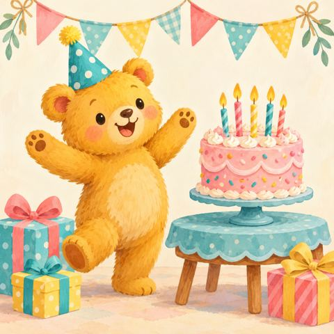

Year 2 · Mathematics · 8 slides
Teddy’s Birthday
One more and one less
Help Teddy prepare his party with balloons, cupcakes, candles and presents.

Learning intention: Find one more and one less than numbers to 20, using objects and neighbouring numbers.
Download editable PowerPointDownload studio backup (.json)
Ready for the classroom
- Open the PowerPoint and start Slide Show. Gentle fades introduce slides. Click once on each activity slide to reveal the answer.
- Give children time to count, talk and use their whiteboards before revealing answers. Teacher notes include prompts, support and answers.
- The lesson includes 9 to 10, 10 to 9, and one less than 1.
- To edit in the Presentation Studio, import the JSON backup. Use the backup to retain the studio’s object positions and animation settings.
Pictures are embedded for offline teaching. All text and individual counting pictures can be moved or edited in PowerPoint. Desktop PowerPoint animation playback has not been checked.